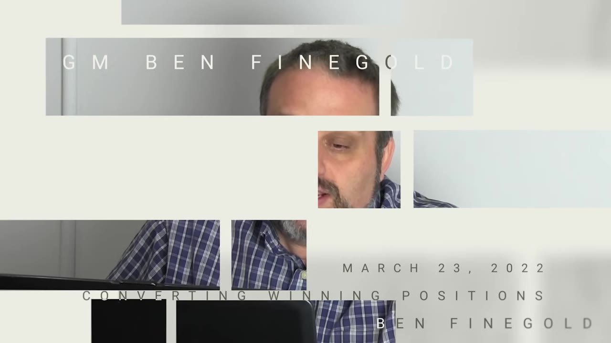
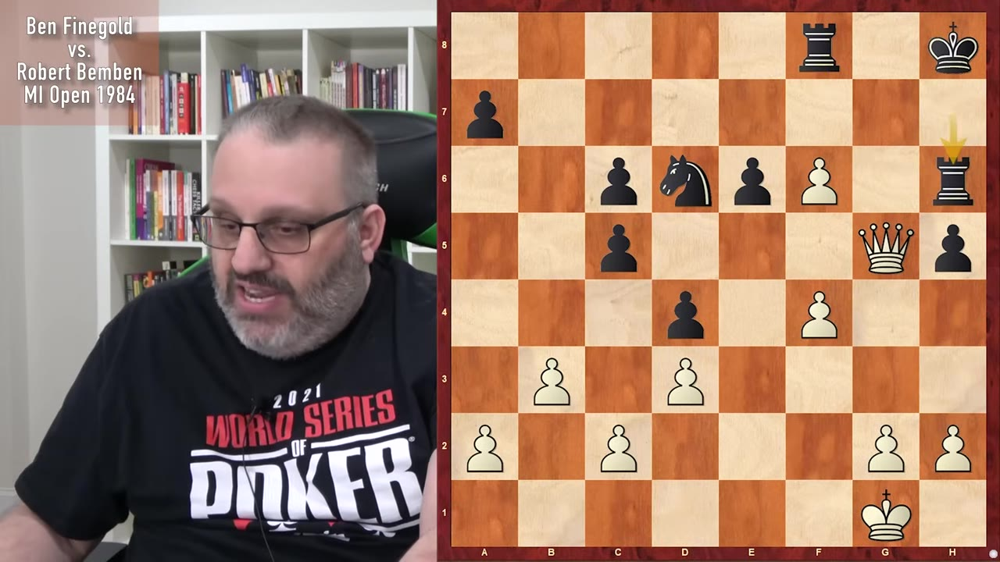
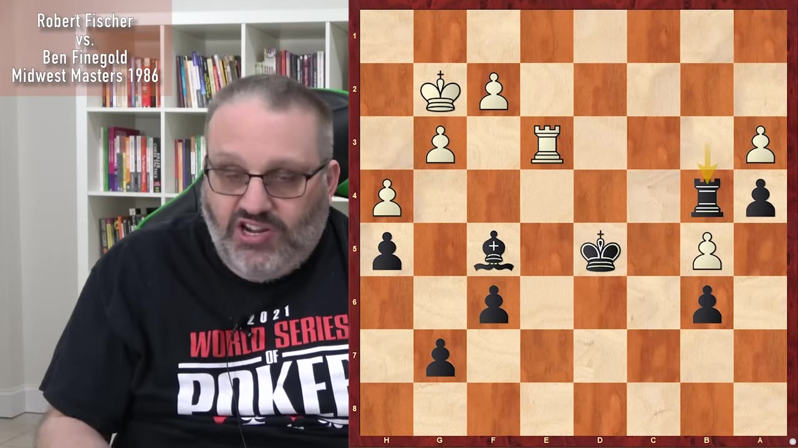
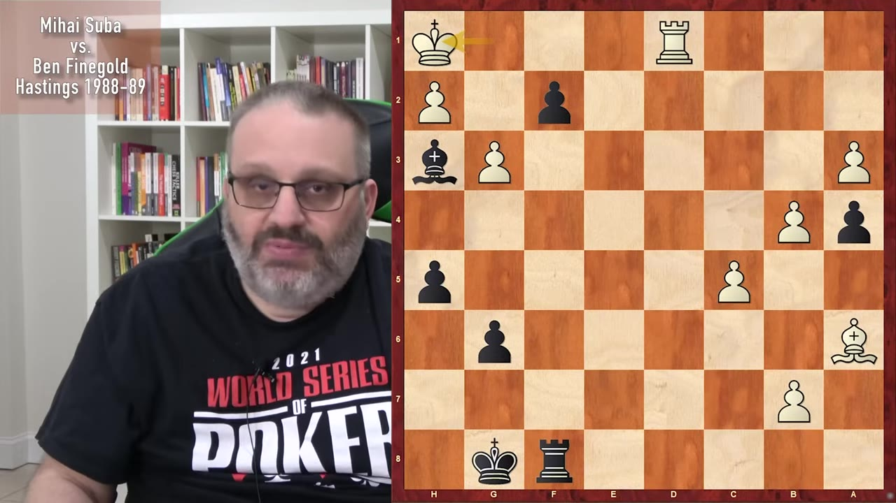
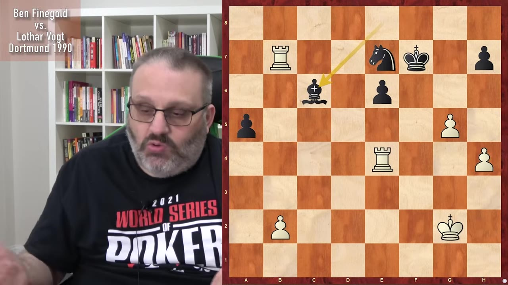
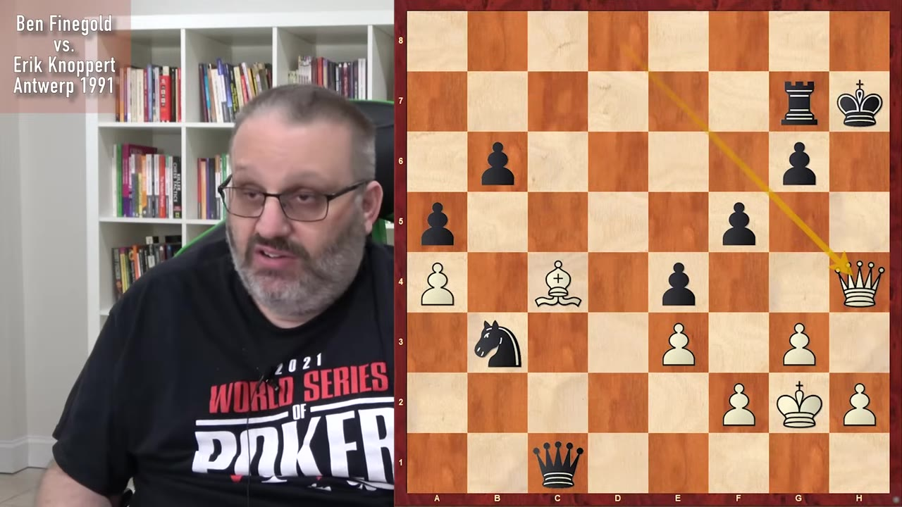
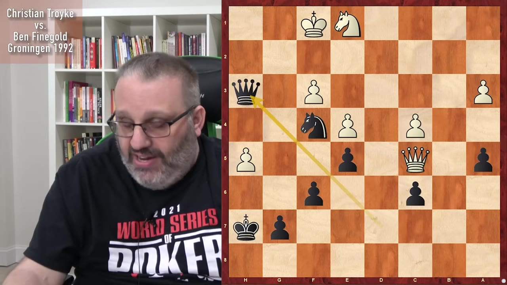

Grandmaster Ben Feingold walks through five of his own games from the 1980s and 90s to show what to actually do once you already know you're winning — and why the answer is almost never "relax."
Watch on YouTubeFeingold sets up the whole lecture before touching a board: once you know you're winning — your opponent just hung a piece — you have exactly three options. Keep playing chess the way you were. Get very cautious and refuse to let any trick happen. Or relax and assume they'll resign. He's blunt that the third is the worst, and that he personally goes extra-cautious: hunt for the opponent's counter-play harder than before, and never sacrifice for a "mate in seven" you might miscount when you're already up a piece.

I play extra cautious when I'm completely winning, and occasionally — and by occasionally I mean too often — I fall into the trap of like, oh, I'm winning, I'm the greatest, and then you mess up.— Ben Feingold
The first game, from the Michigan Open the weekend he turned 15, is an attack against a weaker king. Feingold sacrifices a knight to set up a pin that wins his opponent's queen, ending up with queen and pawn against rook and bishop. His point is that he didn't switch into a slow technical grind — he was winning for two reasons (the material, and the exposed enemy king), so he kept piling pieces toward the king. He even admits the human move he chose at the end was objectively worse than the fastest mate, but it won faster because his opponent's reply was worse still.

Computers are like, why'd you play that bad move? And the answer is, my opponent's move was even worse, so I won even more quickly.— Ben Feingold
A rook-and-opposite-colored-bishop endgame that looks dead drawn — same pawn structure, blockaded passers. Feingold uses it to teach a personal rule: with rooks on, opposite-colored bishops favor the attacker, because you can create threats the defending bishop simply can't answer. His real edge is that his king can march up the board while his opponent's is trapped on the kingside. Eventually he sacrifices the exchange to spring a passed a-pawn on the far wing, which the cornered enemy king can't chase down. He won the tournament's best-endgame prize for it.

The reason I'm winning here is I have a king and he doesn't — so I'm up a king. My king is doing stuff; his king is never, ever, ever gonna do stuff.— Ben Feingold
Favors the attacker, not an automatic draw.
His king walks up the board while the opponent's stays trapped.
Give up the rook for a runaway passed pawn on the far side.
This is the game Feingold frames as the whole lecture in miniature: against Romanian grandmaster Mihai Suba, both players were winning at different points. Suba was crushing him with a strong passed pawn but kept reaching for the flashiest continuation instead of shutting down Feingold's counter-play down the f-file. Once Feingold's defensive resources took over, the roles flipped — and now it was Feingold who played quiet, safe, only-chess moves to bring it home. Same board, two opposite styles of converting an edge.

When I was winning, I did not play wild and crazy. He didn't look for my play — he played wild and crazy, and that was his downfall.— Ben Feingold
Against an East German grandmaster (the Berlin Wall having just come down), Feingold is up a rook and pawn for two pieces with the enemy knight pinned. His opponent, short on time, grabs a tempting rook-takes-g2 shot that "skewers and pins and forks" — and loses by force. The teaching point: there's exactly one move that wins for Feingold, a rook-takes-on-e7 check leading into a king-and-pawn ending with even pawns, and you have to play it because there's no alternative that doesn't lose or draw. He'd already calculated it before the position arose.

Rook takes knight — that could win, lose, or draw. But if you don't calculate it, you have to play it anyway, because there's no alternative move.— Ben Feingold
Against his Dutch friend Eric Knopper, Feingold builds a winning position with all his pieces centralized and a safe king, then finishes with a rook sacrifice — a check-check-mate sequence his opponent never saw. He'd spotted his opponent's intended trick (a knight grab that would have led to a back-rank mate) and sidestepped it because his bishop already controlled the key square. The broader point lands here: a string of "still winning but not best" moves bleeds +2 down to +0.9, and then you're not winning at all.

You've got to put your foot on the gas when you're winning. You have to be careful, but you have to take what's offered you.— Ben Feingold
The last and, he says, most memorable game: a German FIDE master needed a draw in the final round for an IM norm and offered one on move 10. Feingold refused, squeezed, and won. He pointedly does not trade queens when ahead — the textbook "trade when winning" advice is wrong when it's your opponent's king that's exposed, not yours. He keeps the enemy knight permanently stuck defending a weak pawn, dominates with queen and knight, and finishes with a forcing tactic. His summary of the whole lecture is here: stay safe, keep doing what got you the advantage, and stay off the clock's edge.

The main issue with trading queens is whose king is safer. My king is safer — his king has an open seventh rank.— Ben Feingold